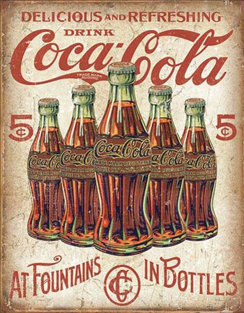
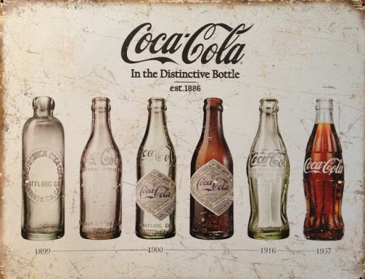
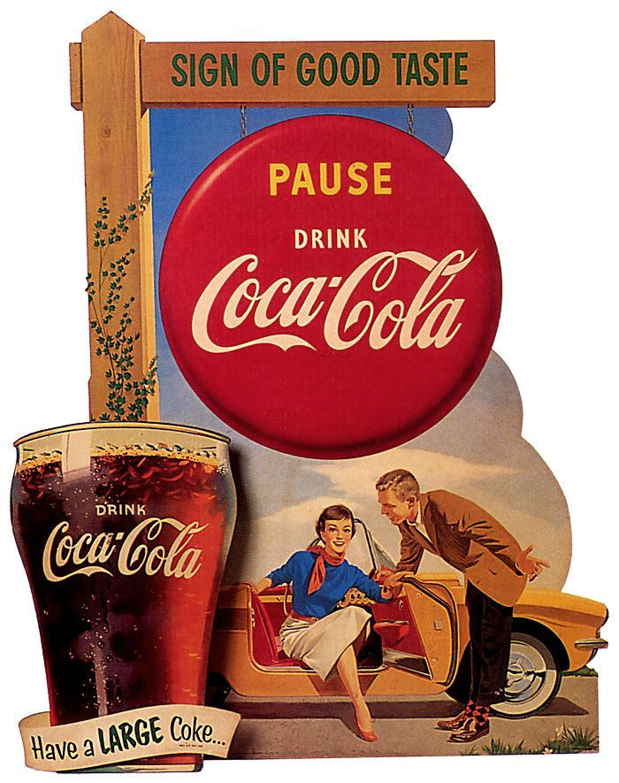
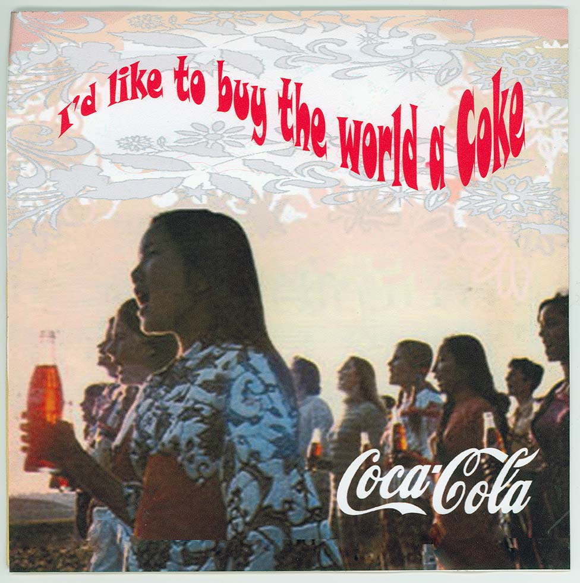
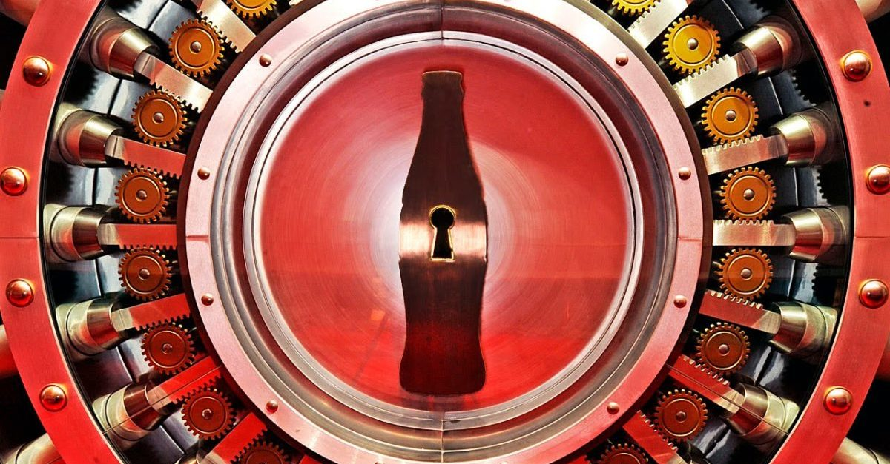
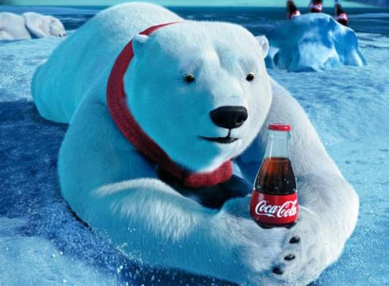
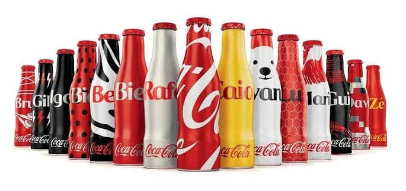

Nossa história
Introdução
Em 1886, nasceu a empresa Coca-Cola, marca que se tornaria ícone mundial de sucesso de vendas.
John Pemberton, um farmacêutico de Atlanta, criou um líquido cor de caramelo e o levou à Farmácia Jacobs.
A mistura foi combinada com água gaseificada e passou a ser vendida como uma bebida especial.
Inicialmente, a Coca era vendida por cinco centavos o copo.
No primeiro ano de existência, a empresa vendeu apenas nove copos de Coca-Cola por dia.
Um século mais tarde, a Coca-Cola Company passaria a produzir mais de 10 bilhões de galões da bebida.
Atualmente, a Coca-Cola é considerada a marca mais onipresente do mundo, com mais de 1,7 bilhão de doses de
bebidas vendidas a cada dia. O refrigerante é distribuído em mais de 110 países.
No Brasil, a Coca Cola chegou durante a Segunda Guerra Mundial, no início da década de 1940.
Hoje, a maior fabricante de refrigerantes do mundo tem uma receita anual de 11,46 bilhões de dólares.
História da Coca-Cola
A história da Coca-Cola iniciou-se no ano de 1886, em Atlanta nos Estados Unidos,
quando um farmacêutico
resolveu criar um xarope para problema de indigestão.
Assim no dia 08 de maio, John S. Permberton criou a formula que deu origem a
bebida mais famosa do mundo.
 Desta forma a Coca-Cola iniciou o seu legado, sendo comercializada pela primeira
vez na farmácia de Jacobs, onde o xarope era misturado com água gaseificada.
Porém ela era vendida por 5 cêntimos o copo, além de que apenas 9 copos eram
comercializados por dia. Contudo a bebida chamou atenção dos clientes que
aceitavam experimenta-la.
Desta forma a Coca-Cola iniciou o seu legado, sendo comercializada pela primeira
vez na farmácia de Jacobs, onde o xarope era misturado com água gaseificada.
Porém ela era vendida por 5 cêntimos o copo, além de que apenas 9 copos eram
comercializados por dia. Contudo a bebida chamou atenção dos clientes que
aceitavam experimenta-la.
E vendo que sua invenção tinha um grande potencial, o seu contador, Frank Robinson
idealiza a bebida de Coca-Cola. Bem como criou o logotipo com as suas próprias mãos.
Porém Permberton morreu 2 anos depois de criar a formula da Coca-Cola.
Assim em 1891 surgi a The Coca-Cola Company.
A Companhia foi fundada por Frank Robinson, contador de John, e seus irmãos,
o farmacêutico Asa G. Candler e John Candler. Sendo Asa Candler o primeiro presidente,
assim como o primeiro a dar grande visibilidade ao negócio. Desta forma,
2 anos depois eles registraram a marca no Instituto Nacional da Propriedade Industrial dos EUA.
Modelos engarrafados

Após passar cerca de 11 anos desde a primeira comercialização do produto na farmácia em Atlanta
a Coca-Cola saiu dos EUA. E em 1899 foi fechado o primeiro acordo, com exclusividade para a bebida ser engarrafada.
A concessão foi dada aos advogados Benjamin F. Tomas e Joseph B. Whitehead por apenas U$ 1 dólar.
Esse é um dos momentos mais importantes da história da Coca-Cola.
Contudo nos primeiros primeiros anos do século XX mais de 400 fábricas começaram a engarrafar a Coca-Cola
nos Estados Unidos, assim como no Panamá, Canadá e Cuba. O que causou um grande problema.
Isso foi porque cada empresa usava um tipo de garrafa, existindo vários modelos assim gerando uma confusão nos consumidores.
Por conta disso em 1915 a empresa decidiu realizar um concurso para padronizar o seu modelo de garrafa.
O vencedor foi Alexandre Samuelson, que criou a garrafa contour.
Bem como, juntamente como o logotipo Coca-Cola se tornou um dos ícones mais reconhecidos da Companhia.
Sucesso da Bebida

O sucesso da Coca-Cola foi eminente, assim nos anos 20 surgiu a primeira caixa para seis garrafas, a famosa six-pack.
Desta forma, as vendas das garrafas superaram as dos dispensadores da bebida, pois facilitava o transporte. Anos depois,
os soldados americanos se tornaram importantíssimos para a popularização da bebida, ao lutarem na Segunda Guerra Mundial.
E por conta disso criou-se um novo modelo de embalagem, de fácil transporte assim como mais resistente, a lata.
O sucesso foi tão grande que mesmo com o fim da Guerra o modelo continuou sendo comercializado.
Desta forma a bebida começou a aparecer em vários anúncios publicitários a partir do ano de 1941,
sendo então como a marca Coca-Cola em 1945.
E se expandindo cada vez mais, ela chega em Portugal no ano de 1977, por meio do histórico slogan “Coca-Cola, a tal”.
Sendo que o primeiro ano da bebida no Brasil chamou a atenção dos portugueses.
Assim eles se interessaram no lado refrescante e delicioso do produto.
Além de ser a primeira empresa a ter permissão de vender refrigerante na China, em 1978.
Coca Cola no Brasil

A Coca-Cola chegou ao Brasil no ano de 1942. Bem como atualmente a divisão da bebida no país é uma das quatro maiores
operações da The Coca-Cola Company. Assim, o nosso sistema é composto pela Coca-Cola Brasil e mais 16 grupos empresarias independentes.
Essas Fabricas autorizadas, além do Leão Junior e a Del Valle são responsáveis pela elaboração do produto final.
Além de possuir cerca de 46 unidades industriais. Sendo elas espalhadas estrategicamente por todo o país,
produzindo bebidas não alcoólicas, sucos, refrigerantes, chás, achocolatados, etc.
Assim gerando por volta de 53 mil trabalhadores diretos, além de mais de 500 mil empregos indiretos.
Com o compromisso de produzir, engarrafar e distribuir tais produtos por todo o país, de acordo com o padrão de qualidade Coca-Cola.
Estratégias

A marca Coca-Cola não cresceu de uma hora para a outra, assim durante a sua história a empresa adotou várias estratégias para o seu progresso.
Desta forma, nos anos 70 a propaganda que sempre foi muito importante se torna a alma o negócio,
relacionando a marca com a alegria de viver e a liberdade.
A exemplo temos a propaganda de 1971, onde jovens, de várias partes do mundo subiam para o pico de uma montanha na Itália.
E juntos cantavam “I’d Like to Buy the World a Coke” que na tradução livre significa, “eu gostaria de comprar uma Coca-Cola para o mundo”
Assim como 75 anos depois de sucesso a empresa decidiu expandir seus negócios, e começou a lançar novos produtos, como a Sprite, em 1961,
a TAB, em 1963 e a Fresca em 1966. Porém, iniciou-se nos anos 80 o chamado “culto ao corpo”, o que fez com a The Coca-Cola Company tivesse mudanças.
O cubano Robert C. Goizueta se torna o novo CEO da companhia, e com uma visão estratégia assumi os riscos de uma forma inteligente.
Assim ele organiza as inúmeras fabricas engarrafadoras dos EUA em uma única empresa, chamada Coca-Cola Enterprises.
Além lançar a Diet Coke, que se tornou a bebida de baixa caloria mais conhecida do mundo.
O fracasso na mudança da formula

Mesmo que a história da Coca-Cola seja um sucesso nem tudo foram flores. Em 1985, o CEO da época, Goizueta, tentou mudar o sabor do refrigerante,
sendo a primeira alteração da formula em 99 anos. E inicialmente, na fase de teste as pessoas “gostaram” do novo sabor,
porém no consumo real essa alteração não foi muito bem aceita.
Desta forma os consumidores pediram o retorno da formula original da Coca-Cola, sendo considerado um dos maiores erros de
marketing da história. Então a Coca-Cola com o sabor original voltou ao mercado. Mas como um nome diferente,
chamada "Coca-Cola Classic", bem como suas vendas começaram a aumentar, assim se tornando líder perto das concorrências.
O nascimento do famoso urso polar

Durante os anos 90 a Coca-Cola teve um crescimento contínuo. O que levou a empresa a se associar aos esportes, onde conseguiu apoio de alguns
dos maiores eventos esportivos mundiais, como os Jogos Olímpicos e a Copa do Mundo. Assim em 1993 é lançada a campanha “Always Coca-Cola”, e
posteriormente surge o famoso uso polar, que acabou se tornando um grande símbolo da marca.
A Coca-Cola na atualidade

A história da Coca-Cola, bem como o seu legado a tornou a marca mais valiosa do mundo, segundo a consultora Interbrand.
Além de ser a palavra mais famosa do mundo bem como o segundo termo mais conhecido do mundo, atrás apenas da expressão “Ok”.
Desta forma, atualmente a Companhia comercializa mais de 500 marcas, com 3.500 produtos dos mais variados, como por exemplo sucos,
refrigerantes, chás e até cafés. Além de possuir quatro das cinco marcas de bebidas mais famosas do mundo, a Coca-Cola, Coca-Cola Light,
Fanta e Sprite.
Assim ela se tornou uma empresa global, que se compromete com os mercados locais. Ou seja, ela sempre está atenta a diversidade bem como as
diferentes preferencias culturais existentes. Portanto você será capaz de encontrar uma Coca-Cola em qualquer lugar do mundo.
Veja nossa galeria de fotos que faz parte da nossa história.
- Foto 1
- Foto 2
- Foto 3
- Foto 4
- Foto 5
- Foto 6
- Foto 7
- Foto 8